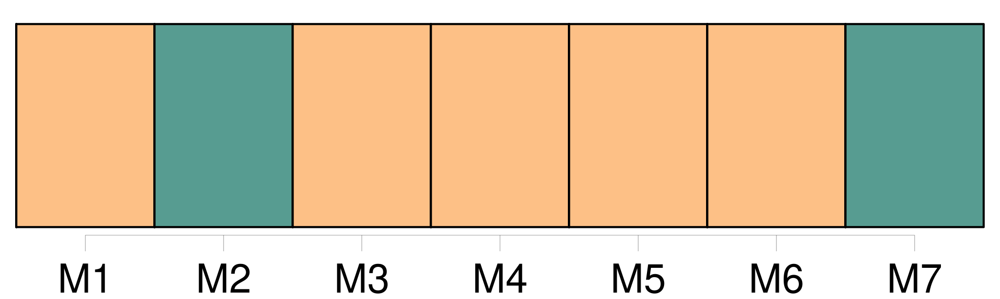

Longueur nb maillons : 12 mentions |
 |
LA MORTE AMOUREUSE [1 phrases] Je ne veux rien [vous] refuser, mais je ne ferais pas à une âme moins éprouvée un pareil récit. [22 phrases]
Ce que je dis là est pour [vous] montrer combien ce qui m’ est arrivé ne devait pas m’ arriver, et de quelle fascination inexplicable j’ ai été la victime. [4 phrases] [Vous] savez les détails de cette cérémonie : la bénédiction, la communion sous les deux espèces, l’ onction de la paume des mains avec l’ huile des catéchumènes, et enfin le saint sacrifice offert de concert avec l’ évêque. [31 phrases]
On n’ ose causer un tel scandale devant tout le monde ni tromper l’ attente de tant de personnes ; toutes ces volontés, tous ces regards semblent peser sur [vous] comme une chape de plomb ; et puis les mesures sont si bien prises, tout est si bien réglé à l’ avance, d’ une façon si évidemment irrévocable, que la pensée cède au poids de la chose et s’ affaisse complétement. [122 phrases] Ô [frère] , méditez bien ceci!! [1 phrases] Je ne [vous] retiendrai pas plus longtemps sur ces défaites et sur ces victoires intérieures toujours suivies de rechutes plus profondes, et je passerai sur-le-champ à une circonstance décisive. [49 phrases] [Vous] l’ avouerai -je?? [271 phrases] Voilà, [frère] , l’ histoire de ma jeunesse.
Ne regardez jamais une femme, et marchez toujours les yeux fixés en terre, car, si chaste et si calme que [vous] soyez, il suffit d’ une minute pour [vous] faire perdre l’ éternité. |

|
Il est possible de télécharger la ressource sur la page Ortolang |
Si vous avez des questions ou vous voyez des erreurs, merci d'envoyer un mail à silvia.federzoni89@gmail.com |